Данная статься призвана помочь всем, кто заинтересован в выборе дозиметра для личного использования. Сразу оговорюсь, что я не буду рассматривать здесь дорогие профессиональные и лабораторные приборы стоимостью в тысячи долларов.
Краткая справка:
Многие современные дозиметры имеют также и функцию радиометра. Поэтому в статье я буду употреблять общее название «дозиметр» как прибор для измерения радиации, а при необходимости, конкретизировать.
Дозиметры подразделяются на несколько основных категорий:
Типы датчиков
Основа любого дозиметра из вышеприведенных категорий – это его датчик, который непосредственно чувствителен к ионизирующему излучению. Самые чувствительные датчики - сцинтилляционные кристаллы, они обычно применяются в поисковиках, а иногда в измерителях и сигнализаторах.
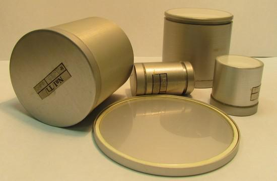
Рис.1. Сцинтилляционные детекторы.
Затем идут торцевые слюдяные счетчики Гейгера-Мюллера – они очень чувствительны к бета-излучению и, иногда, к альфа. Применяются в первую очередь, в измерителях, иногда в сигнализаторах и поисковиках.
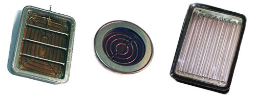
Рис.2. Торцевые слюдяные счетчики Гейгера-Мюллера.
Ну и наконец, самый распространенный тип детектора – трубки типа СБМ. Они хорошо детектируют гамма-излучение и частично жесткое бета-излучение. Но совершенно не чувствительны к альфе и «мягкой» бете. Наиболее употребительный из них – СБМ-20 и его разновидности. Есть ещё модели типа СБМ-10 и СБМ-21 – это трубки для портативных приборов, маленького размера, но по чувствительности они значительно уступают СБМ-20.
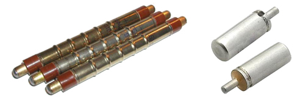
Рис.3. Газоразрядные счетчики СБМ-20, СБМ-21.
Имеются так же и различные модификации вышеозначенных детекторов, на которых я не буду сейчас подробно останавливаться.
Обратимся к конкретным моделям.
Индикаторы.
В 90-хх годах прошлого века и начале 2000-хх на рынке появилось огромное количество бытовых дозиметров-сигнализаторов. Отчасти это было связано с чернобыльской трагедией, отчасти с тем, что с темы о радиации сняли гриф «секретно». И вот подобные приборчики начали делать все кому не лень. Тут и маститые заводы радиоэлектронной аппаратуры и военные предприятия, работающие по конверсии и даже малоизвестные кооперативы. Общей чертой у них было использование одного Счетчика типа СБМ-20, зачастую со встроенным несъемным энергокомпенсирующим экраном, Таким прибором можно только определить радиоактивный предмет и очень приблизительно оценить уровень его радиоактивности.
Вот отдельные примеры этих приборов: Белла, Мастер-1, ДРГБ-01 Сигнал, ДБГБ-01У Фон, Кипарис, Автомобильный ДБГБ-04 ИРА-1, Регул ИИИ-1, ГРИФ-1, ДБГ-04А, ИРИС, дозиметр-шагомер Полынь-101
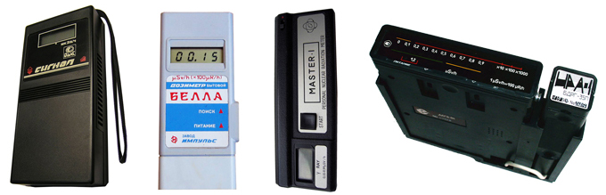
Рис.4. ДРГБ-01 Сигнал, Белла, Мастер-1, Автомобильный ДБГБ-04 ИРА-1.
Некоторые из них были настолько примитивны, что даже не имели дисплея, на который выводились бы цифровые данные замера, а сигнализировали при помощи частоты морганий светодиода и звукового сигнала, либо простого стрелочного индикатора с цветовой шкалой зеленый/желтый/красный: УДРБГ-Б, ИРГ-02А, ИБГИ-01, АБИС, ИРИ-1 БЕРЕГ, ПОИСК, ДБГ-05Б, ДРСБ-01 Кварц.
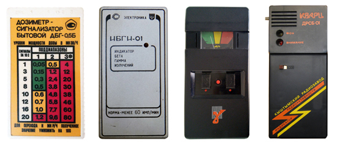
Рис.5. ДБГ-05Б, ИБГИ-01б, ИРИ-1 БЕРЕГ, ДРСБ-01 Кварц.
Современные индикаторы более совершенны. В них используется микропроцессорная схема обработки сигнала, более экономичный режим энергопотребления, что позволило значительно увеличить время работы от батареи и достичь большей точности измерения.
Рис.6. Радиаскан-701А, Радекс 1706, Радекс РД1212, ДКГ-04Д Грач, Эколог.
В принципе, с функцией определения радиоактивных предметов может справиться практически любой из них. Выбирайте исходя из цены, размеров и технического состояния. Единственный совет: не берите прибор с маленьким верхним пределом измерения. Например, приборы с пределом в 1000 мкр/ч очень часто, при «встрече» с мощными источниками, обнуляются или показывают низкие значения, что может быть крайне опасным. Ориентируйтесь на верхний предел (Мощность экспозиционной дозы) минимум 10000 мкр/ч (10мр/ч или 100мкЗв/ч), а лучше, 100000мкр/ч (100мр/ч или 1мЗв/ч).
Прибор с двумя счетчиками СБМ-20 будет работать быстрее и более предпочтителен. Эти данные указываются в технических характеристиках прибора. Иногда встречаются индикаторы со слюдяными датчиками типа СБТ-11, СБТ-9 или Бета они так же весьма чувствительны и хороши.
Идем дальше. Сигнализаторы.
Сигнализаторы – это те же индикаторы, но у них есть одно полезное свойство – срабатывание сигнализации при достижении определенного порога фона. Полезны для сталкеров, диггеров и работников, связанных по долгу службы с ИИИ.
Самая распространенная из этой серии – Терра.
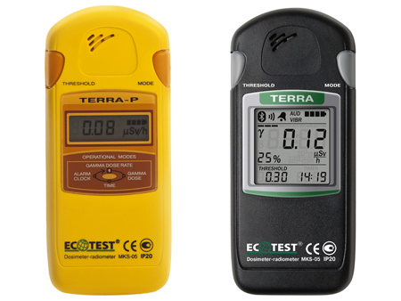
Рис.7. Терра-П, Терра.
Обычная желтая Терра-П недорога и вполне удовлетворяет основные потребности неискушенного пользователя. Ресурса батареи в «спящем» режиме хватает примерно на 1,5 года. Это практически рекорд среди сигнализаторов.
Терра-П+ удобнее, наличием подсветки и более высокого порога измерения, возможностью измерения плотности бета-потока.
Есть ещё профессиональные черные Терры, но это уже, что называется, для гурманов. Имеют расширенный функционал, но и цена впечатляет.
Меня особенно радует в Терре возможность установки порога сигнализации с разрешением до микрорентгена. Можно, например, установить порог на 15 мкр/ч и прибор будет реагировать даже на незначительные колебания фона.
Но не переоценивайте Терру. Это хороший сигнализатор и индикатор и не более. Как поисковик она слишком медленная, а как измеритель – малочувствительная.
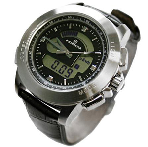
Рис.8. Часы-дозиметр СИГ-РМ1208М.
Стильная игрушка. Датчик очень малочувствительный. Пригодиться разве что работникам атомной индустрии. Может просигнализировать, если рядом запустят атомный реактор или вы попадете под луч дефектоскопа. За ту цену, по которой её продают, можно взять хороший сцинтиллятор. В общем, скорее дорогие понты, чем полезный прибор.
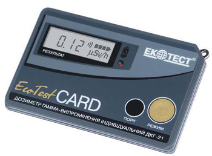
Рис.9. Карточка ДКГ-21.
Собственно, вариация на тему предыдущих часов. Тот же малочувствительный датчик СБМ-21, та же медленная реакция на изменение фона. Основные два преимущества: предельная компактность и очень высокий «потолок» измерений – до 100Р/ч. И та же абсолютно негуманная и несуразная цена.
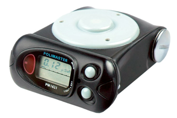
Рис.10. Polimaster ДКГ-РМ1621.
Очень удачная модель. Чувствительный торцевой слюдяной датчик, высокий предел измерения, компактность, возможность использовать в качестве поисковика, быстрая реакция на изменение фона. Единственный минус – высокая цена. Но это действительно хороший и функциональный прибор.
Измерители.
Основное требование к измерителям – чувствительный датчик. Соответственно, готовьтесь к «кругленьким суммам».
Но, если бюджет совсем ограничен, то можете взять старые модели, например
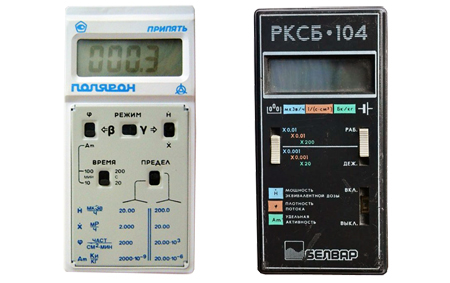
Рис.11. Припять, РКСБ-104.
Они, хотя бы, определят явное поверхностное загрязнение радионуклидами и возможную радиоактивность стройматериалов.
Однако, я все же, рекомендую приборы с торцевыми слюдяными датчиками, которые способны детектировать «мягкое» бета-излучение, чего не могут СБМ-20. Из старых моделей это МС-04 «Эксперт», ИРД-02Б1, ИРД-02, ДРГБ-1 ЭКО-1М.
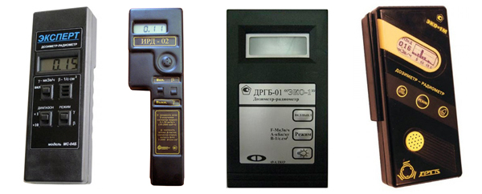
Рис.12. МС-04 «Эксперт», ИРД-02, ДРГБ-1 ЭКО-1М.
Из новых Радиаскан-701А. Номинально индикатор, но по факту – неплохой измеритель с богатым функционалом, за весьма скромную цену.
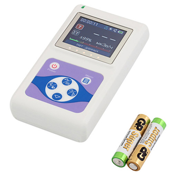
Рис.13. Радиаскан-701А.
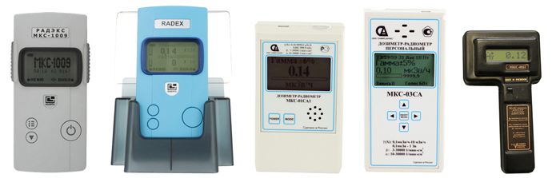
Рис.14. Радекс РД1008, Радекс РД1009, МКС01СА1, МКС03СА1, МКС-08П.
Если повезет, можете ещё купить на вторичном рынке радиометр Бета без свинцового домика с датчиком СБТ-10А.
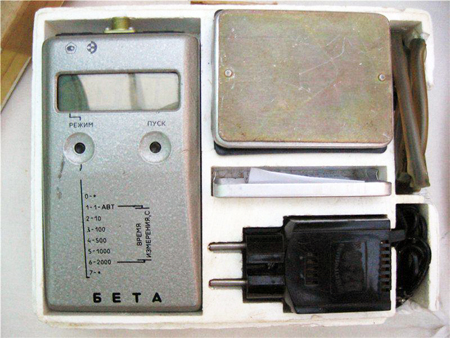
Рис.15. Дозиметр Бета.
Поисковики.
Запомните сразу: хороший поисковик дорог. Если Вы не фанат-радиофил и не работник профильной организации, то поисковик Вам вряд ли понадобится.
Практически все поисковики используют сцинтилляционные детекторы на кристаллах йодида натрия или цезия. Иногда встречаются поисковики с пластиковым детектором, но их чувствительность меньше.
Поисковики не подходят для точных измерений. Большинство поисковиков видит только гамму и практически слепы к бете. «Верхний» предел поисковиков весьма низок и ограничен обычно несколькими миллирентгенами, зато чувствительность на околофоновом уровне очень высокая, это позволяет обнаруживать слабые источники радиации с расстояния 0,5…2 метра.
Из старых моделей следует упомянуть СРП-2.
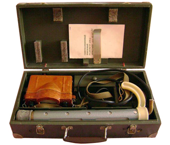
Рис.16. СРП-2.
Пульт похож на ДП-5. К сожалению, в настоящий момент трудно найти рабочий экземпляр. Геологоразведочный прибор.
Самый ходовой на вторичном рынке – СРП-68-01.
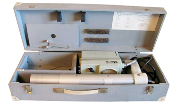
Рис.17. СРП-68-01.
Пожалуй, самый распространенный геологоразведочный прибор. Достаточно тяжелый, но чувствительный.
Есть ещё две его модификации – СРП-68-02 и СРП-68-03.
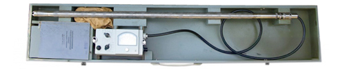
Рис.18. СРП-68-03.
Пульты у них аналогичные, но вот зонды изготовлены либо под измерение в массе жидкости (сельхозпродукция), либо в скважинном исполнении с длинным кабелем. Обе эти последние модификации не подходят для обычной поисковой работы.
Тут я должен обязательно упомянуть об очень важном Ахтунге!
Сейчас крайне трудно найти СРП в хорошем рабочем состоянии. Самая частая поломка – дефекты кристалла – они трескаются, рассыпаются, мутнеют, напитываются влагой. Всё это происходит от времени и не надлежащих условий хранения (влажность, перепады температур, удары). Так же часто встречаются поломки кабеля, пульта, «севшие» ФЭУ.
Ремонт СРП очень дорогой и может обойтись до нескольких сотен долларов. Поэтому, при покупке, обязательно требуйте полной проверки работоспособности, согласно правилам технической эксплуатации.
Да, и вот ещё что: обычными сцинтилляторными поисковыми приборами замерять «радиацию в продуктах» нельзя!
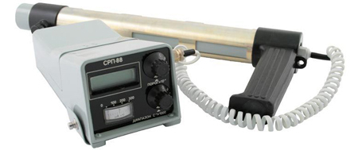
Рис.19. Поздняя модификация СРП-88.
Очень неудачная модель. Низкая чувствительность, медленное время реакции, неудобное отображение результатов. Не рекомендую, будете разочарованы.
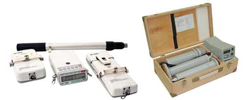
Рис.20. Более современные модели ПОИСК-07, ДКС-96.
Хорошие чувствительные приборы, но цена их оставляет мало шансов даже для очень заинтересованного радиофила. Вероятность купить б/у за пол цены практически равна нулю.
Что же остается страждущим?
Стора ТУ и стора-ТУ обновленная. Не путать с обычной Сторой и Сторой-Т.
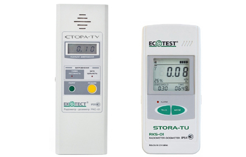
Рис.21. Стора ТУ и стора-ТУ обновленная.
Это хоть и не сцинтиллятор, но всё равно, очень хороший и чувствительный прибор. Детектор – 4 счетчика СБМ-20 имеет большую площадь и позволяет обнаруживать слабые источники радиации, типа часов с СПД на расстоянии до 1 метра. Цена весьма бюджетна и доступна по сравнению со сцинтилляторами. Можно найти вариант «незначительно б/у» за ещё более скромные деньги. Я сам уже несколько лет пользуюсь Сторой-ТУ и вполне доволен её работой.
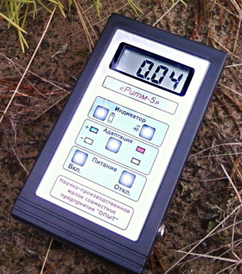
Рис.22. РИТМ-5.
Поисковый портативный сцинтиллятор с хорошим объемом кристалла 10см3. Производится на Украине. Цена 600 долл. Вполне может составить конкуренцию знаменитому Exploranium GR-100.
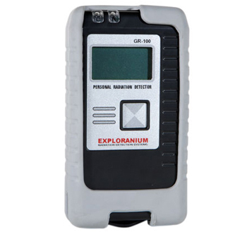
Рис.23. Exploranium GR-100.
Хороший импортный портативный поисковый сцинтиллятор. Часто встречается на Ибее, иногда на Российских и Украинских аукционах. Цена может колебаться от 250 до 1000 долл. Вопрос стоит в проверке полной работоспособности при покупке, ибо чинить такой прибор – занятие неблагодарное.
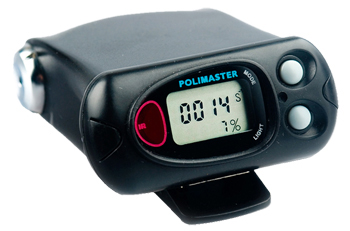
Рис.24. Полимастер РМ1703.
Продукт белорусского бренда Полимастер. Это что-то среднее между поисковиком и сигнализатором. Портативный прибор, довольно чувствительный, не смотря на небольшой (4см3) объем сцинтиллятора. Поступает для использования на таможни. Достойный прибор, но цена за новый совсем не гуманная. Если кому-то повезет взять с рук не дорого – берите!
Ну и конечно же, доступные и распространенные завсегдатаи Ибея, импортные Eberline, Ludlum, Bicron
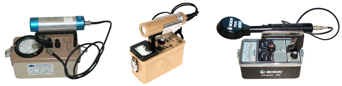
Рис.25. Eberline, Ludlum, Bicron.
Можно купить за 250…500 долл. Только ищите с датчиком 44-3 – хороший гамма-поисковик или 44-9 – чувствительный к бете. Естественно, заручитесь гарантией работоспособности.
Вообще, я хочу сказать, что поисковики со стрелочными индикаторами более предпочтительны –они быстрее отображают изменение фона. Ещё у поисковика обязательно должно быть озвучивание гамма-квантов – иногда на слух искать быстрее и удобнее.
Отдельная статья – портативные спектрометры. Это не просто сцинтилляторные поисковики, но и спектроанализаторы. Т.е. такой прибор позволяет не только обнаружить повышенный фон, но и определить, какой изотоп вызвал это повышение фона.
Самый распространенный из спектрометров на вторичном рынке – Exploranium GR-130.
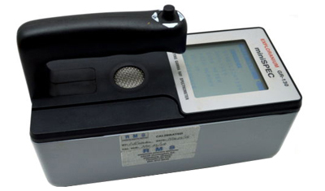
Рис.26. Exploranium GR-130.
Отличный и надежный прибор. К сожалению, достаточно дорог. На Ибее можно купить за 800…1500 долл. Этот девайс только для истинных радиофилов!
Скажу несколько слов о неудачных моделях и о том, чего покупать не стоит.
Пример первый – Дозиметр Air counter. Острые языки ещё именуют его «тест на беременность»
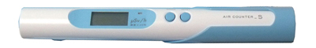
Рис.27. Дозиметр Air counter.
Дешевая японская поделка. В качестве датчиков применены малочувствительные пин-диоды. Ооочень инерционный и тормозной. Чувствителен практически только к гамме и то, если уткнуть вплотную к источнику. После всплеска показания крайне долго возвращаются к фоновому значению. Очень низкий предел измерения – всего 1000 мкр/ч.В общем, это даже не игрушка, это неудачная игрушка.
Следующий экспонат - Smart geiger для телефонов.
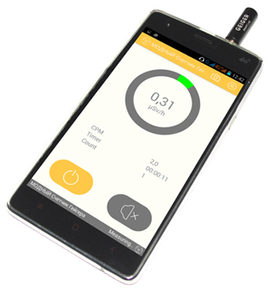
Рис.28. Smart geiger для телефонов.
Представляет собой приставку в виде штекера для мобильного телефона, питается от того же телефона. Данные выводит на экран, используя специальное приложение. Его низкая цена не оправдывает его убогость. Если в аэр-кантере применено нескольно пин-диодов в качестве датчика, то тут вообще один. Даже непонятно, реагирует ли он на что-нибудь или нет. Крайне низкая чусвствительность, огромная инерционность и время измерения. Напрастно выброшенные деньги. Не введитесь на дешевизну и маленькие размеры!
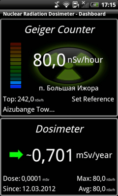
Рис.29. Камера телефона.
В последнее время появилось приложение, оценивающее внешний радиационный фон по количеству артефактов на матрице камеры мобильного телефона с закрытым объективом. Всё, что для этого нужно – установить соответствующее приложение и заклеить объектив камеры кусочком черной изоленты. Что можно сказать по этому поводу? Да, эффект имеет место быть, но эффективность такого детектора будет оправдана только в том случае, если рядом с вами окажется кусок ТВЭЛА из реактора или вы попадете под луч мощной рентгеновской трубки. В остальных случаях – это не более, чем красивая игрушка на экране телефона.
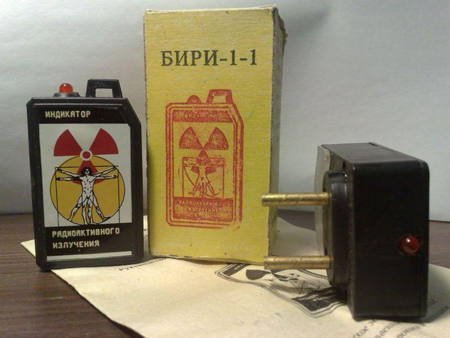
Рис.30. Брелки БИРИ.
Простенькие сигнализаторы- моргалки. По вспышкам светодиода можно прикинуть радиационный фон. Тоже из серии игрушек. Будет полезна только в случае атомного взрыва или иной радиационной катастрофы. В устройстве использован очень малочувствительный датчик – СБМ-10.
Отдельно скажу о военных моделях дозиметров.
Да, они сейчас дешевы и доступны, но практически все бесполезны в современных бытовых условиях. Эти дозиметры, а точнее, радиометры, рассчитаны на условия ядерного взрыва и огромные мощности ионизирующих излучений. Небольшие превышения фона они могут попросту не заметить.
Некоторого внимания заслуживают модели серии ДП-5. Это модификации ДП-5А, ДП-5Б, ДП-5В. Они могут показать видимое превышение на характерных радиоактивных источниках типа СПД или даже гранита.
Из этой серии мне особенно нравятся ДП-5ВБ и ДП-5М.
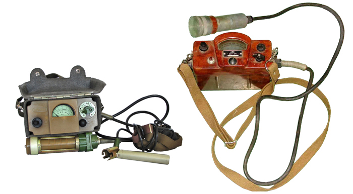
Рис.31. ДП-5ВБ, ДП-5М.
ДП-5ВБ это гражданский прибор для ГО, он не содержит контрольного источника радиации. Но, окно бета-фильтра у него просто огромное, в результате чего его чувствительность примерно в 4 раза выше чем у остальных моделей.
ДП-5М – радиометр со слюдяным торцевым счетчиком высокой чувствительности, но он очень редко встречается.
Неплохо себя показали флотские радиометры КРБ-1 и КРБГ,
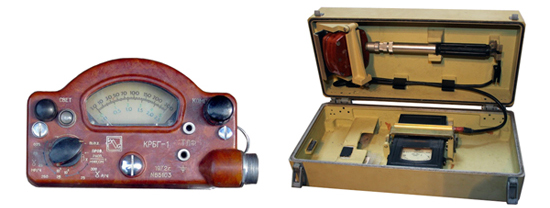
Рис.32. КРБГ-1, КРБ-1.
в которых так же использованы торцевые слюдяные счетчики. Они хорошо определяют даже незначительные поверхностные загрязнения радиоактивными веществами, а так же отличают радиоактивные предметы. Однако очень инерционны и не пригодны в качестве поисковиков.
Беда всех старых военных радиометров – «просевшие» радиодетали. От длительного и, зачастую, неправильного хранения, многие детали в схемах приходят в негодность и поэтому, больше половины экземпляров «военки» оказывается нерабочими. А ещё, практически все они большие, тяжелые и их неудобно таскать с собой.
Приведу список дозиметров-радиометров военных моделей, которые совсем бесполезны в быту, из-за своей малочувствительности. Ими можно померить разве что последствия атомного взрыва Они годятся только как экспонат на полку.
ДП-1, ДП-2, ДП-3Б, ДП-4, ДП-11, ДП-12, ДП-62, ДП-64. В быту, с практической точки зрения, бесполезны все накопительные дозиметры типа «Карандаш» - ДП-22, ДП-24, ИД-1 и аналоги. Не более, чем сувениры.
Воздержитесь и от покупки промышленных специальных радиометров типа ДКС-04, ДРГ-01Т1, ДРГЗ, ДРГ-05, Сура
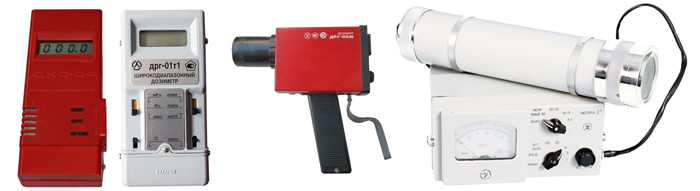
Рис.33. ДКС-04, ДРГ-01Т1, ДРГ-05, ДРГЗ.
Они имеют очень низкую чувствительность и предназначены для решения специальных задач в отдельных областях промышленности. Если Вы обратите внимание, то шкала у них проградуирована в мкр/сек, а не мкр/ч, а используемый сцинтиллятор – воздухоэквивалентный пластик с малой чувствительностью. Нижний порог измерения таких приборов обычно начинается от 100мкр/ч или даже от 1000мкр/ч. Они предназначены для контроля работы рентгеновских установок, гамма-дефектоскопов и манипуляций с ядерным топливом. Для бытовых и околофоновых замеров бесполезны.
Скажу ещё несколько слов о Госреестре и Госповерке.
Если Вы обычный пользователь, то они вашему прибору не нужны. Более того, приборы, включенные в госреестр и прошедшие госповерку, будут стоить на 30…40% больше своих собратьев. Другое дело, если прибор Вам нужен для предпринимательской или иной лицензированной деятельности. Тогда эти два условия являются обязательными. О наличии госповерки и состава в госреестре вы можете узнать у продавца прибора. Обычно, бытовые приборы проходят поверку единожды при изготовлении на заводе и в дальнейших поверках не нуждаются.
Упомяну общепризнанные бренды-производители дозиметров.
Это действительно уважаемые торговые марки. Покупая их приборы, Вы не ошибетесь и приобретете качественный и надежный товар.
Экотест – Украинский производитель. Отличные сигнализаторы Терра и поисковики Стора.
СНИИП АУНИС – Российский производитель. Замечательные измерители серии МКС01СА1…МКС01СА3 с чувствительными торцевыми счетчиками.
Кварта-Рад – Российский производитель линейки Радекс.
Polimaster – Белорусский производитель – качественные и отличные сцинтилляторы, сигнализаторы, поисковики, индикаторы. Цены, однако, оставляют желать лучшего.
Eberline, Ludlum, Bicron, Exploranium – зарубежные производители. Отличные приборы на вторичном рынке и аукционах. Классный товар по умеренным ценам, универсальные приборы.
Радиаскан – молодой российский бренд, Недорогие, но чувствительные и качественные приборы
Ну и наконец, последний вопрос.
Вы купили дозиметр и не знаете, как его проверить. Обычному рядовому пользователю не положено иметь контрольных источников, для этого нужна специальная лицензия.
Есть ряд предметов с повышенным радиационным фоном, на которых вполне можно проверить работу вашего прибора. Перед проверкой не забудьте снять или сдвинуть крышку фильтра на датчике, если таковая имеется.
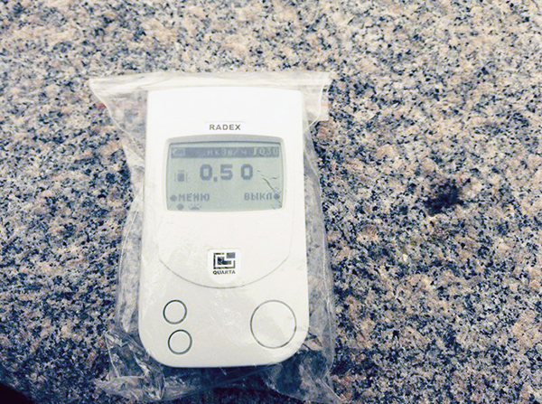
Рис.34. Гранит.
Облицовка памятников, станций метро и набережных. Зачастую гранит имеет фон 30…90 мкр/ч.На таком граните вполне можно проверить работоспособность дозиметров. Бывает, правда, гранит, фон которого не отличается от природного – 10…15мкр/ч.
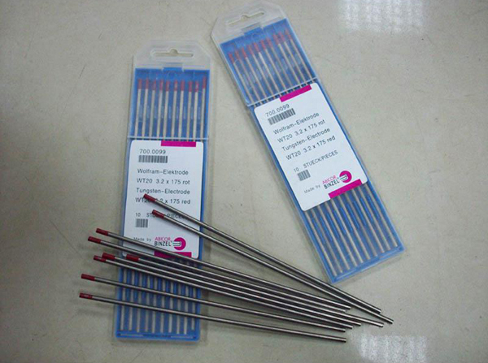
Рис.35. Вольфрам-ториевые сварочные электроды WT-20 с красными головками.
Не спутайте с другими элеткродами другого цвета! Содержат около 2% радиоактивного тория. Свободно продаются в сварочных ларьках на базаре или магазинах сварочных принадлежностей. Лучше для теста использовать пачку электродов (5шт), а не один. Фон – 40….250мкр/ч.
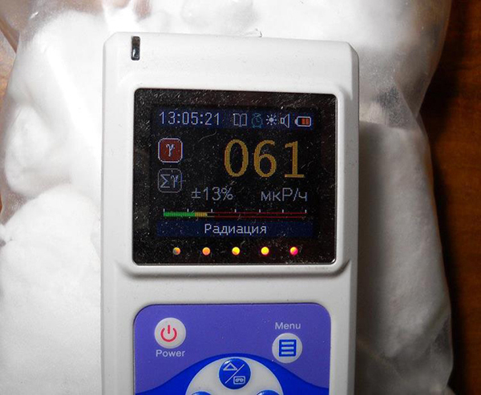
Рис.36. Хлорид калия.
Радиоактивен за счет природного изотопа К-40, но радиоактивность эта слабая и опасности не представляет. Купите пакет лабораторного хлорида калия или на базаре упаковку удобрения «Хлористый калий». Таким образом, можно проверить измерители со слюдяными датчиками, а также приборы со съемными фильтрами. Не забудьте, кстати, эти фильтры снять перед измерением или открыть шторки датчиков. Прибор покажет фон 18…40 мкр/ч или 10…25 распадов/кв.см*мин. по бете. Приборы с встроенными компенсационными несъемными фильтрами типа Беллы могут вообще ничего не показать из-за малой чувствительности.
Ещё измерители можно проверить на обычном хрустале, сняв крышку фильтра. Хрусталь тоже содержит изотоп К-40 и дает незначительное превышение над фоном, как и хлорид калия. Приборы на СБМ-20, правда, плохо видят К-40.
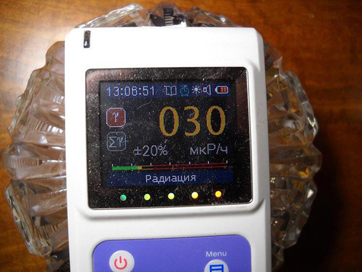
Рис.37. Хрусталь.
Я буду очень рад, если моя статья помогла Вам определиться с выбором и покупкой дозиметра. Удачи Вам и нормального радиационного фона!
Ниже, Вы сможете найти видео с моего YouTube канала о применении дозиметров в быту.